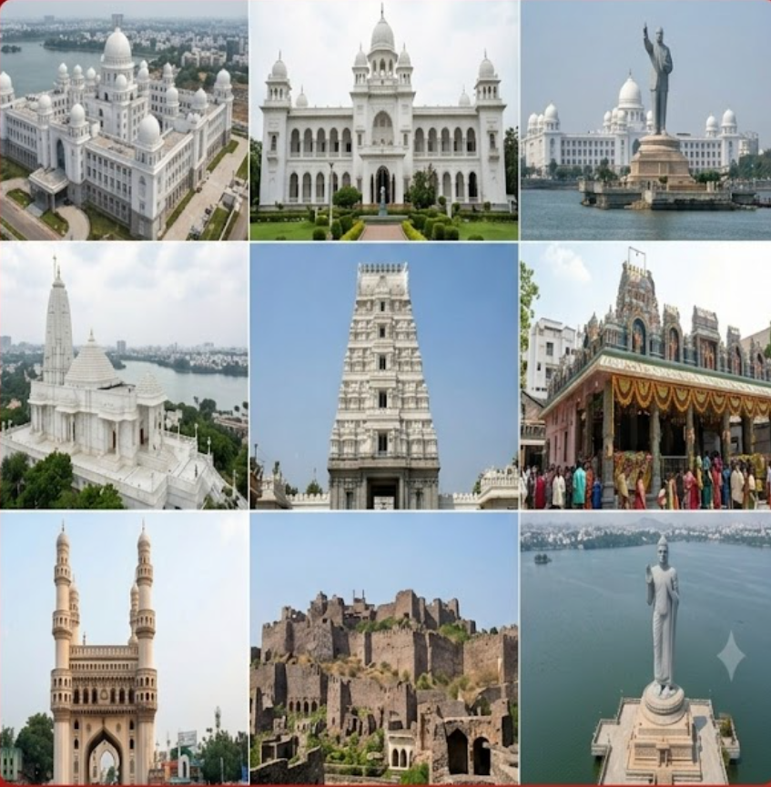
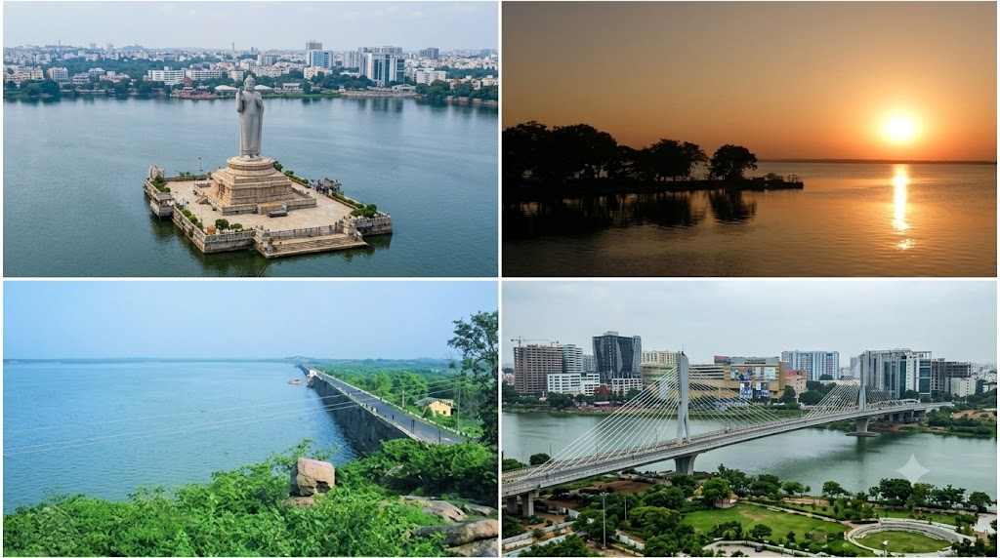
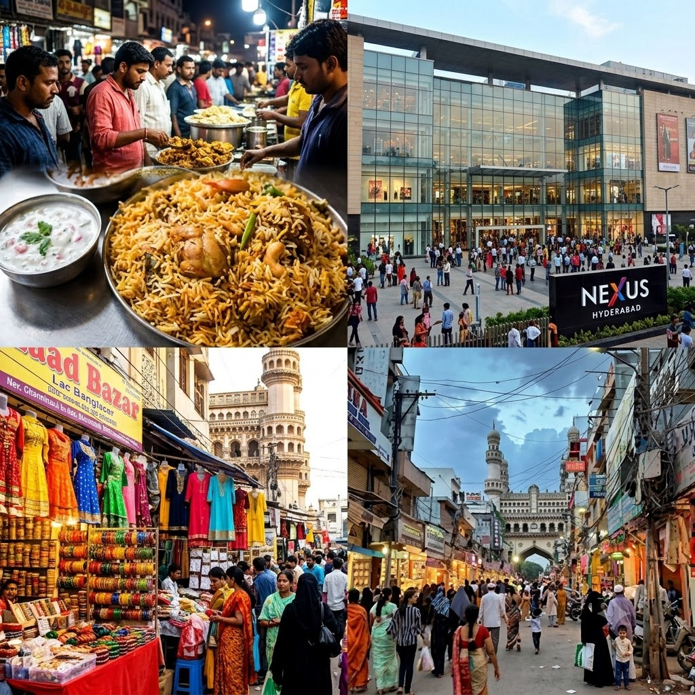

Four centuries of royal legacy, culture and unstoppable progress
Hyderabad, the capital of Telangana state, is a city where the splendour of its Nizami past coexists perfectly with the dynamism of its tech-driven present. Founded by Muhammad Quli Qutb Shah in 1591, the city was originally built on the banks of the Musi River.
The Nizams of Hyderabad, who ruled from 1724 to 1948, were once among the richest rulers in the world — their passion for architecture, art and culture gave the city its magnificent monuments, language, cuisine and traditions. Today, Hyderabad is also the fourth largest technology hub in the world and home to global giants like Microsoft, Google, Amazon and Apple's largest India campuses.



Hyderabad has excellent connectivity within the city and with the rest of India
Rajiv Gandhi International Airport with connections to 60+ cities in India and 50+ international destinations. Located 22 km from city centre.
Secunderabad Junction is the main railway hub with high-speed trains to Mumbai, Delhi, Chennai, Bangalore and all major Indian cities.
Hyderabad Metro Rail covers 3 lines and 57 stations. Fast, clean and affordable — the best way to navigate the city. Runs 6AM to 10PM daily.
TSRTC operates 3,500+ buses covering all areas. The bus network is extensive and the most affordable way to travel across the city.
Hyderabad is a year-round destination, but some seasons are especially rewarding
The best season to visit. Cool, pleasant weather ideal for sightseeing. Book hotels early as it's peak season.
Warm but manageable. Gardens bloom beautifully. Good time to visit heritage sites in the morning hours.
Hot and dry. Carry water and sunscreen. Visit early mornings or evenings. Visit air-conditioned museums and malls.
Heavy rainfall makes the city green and refreshing. Good for budget travel as fewer tourists. Check flood updates.
Insider advice to help you make the most of your Hyderabad visit
Light cotton clothes are ideal. Carry a shawl for temples and mosques which require modest dress and head coverings.
Ola and Uber are widely available and affordable. For Old City, shared autos are faster than cabs due to narrow lanes.
UPI (Google Pay, PhonePe) is accepted almost everywhere. Keep some cash handy for street markets and small vendors.
Street food is generally safe at busy stalls. Must-tries: Irani Chai at Nimrah Cafe, biryani at Bawarchi, haleem at Pista House.
Photography is allowed at most sites. A few temples restrict cameras inside the sanctum. Always ask before photographing people.
Most museums and the Salar Jung Museum are closed on Fridays. Plan your museum visits accordingly to avoid disappointment.
At traditional markets like Laad Bazaar and Begum Bazaar, prices are negotiable. Start at 50-60% of the quoted price.
Affordable Indian SIM cards (Jio, Airtel, Vi) provide excellent 4G/5G coverage across Hyderabad. Available at the airport.